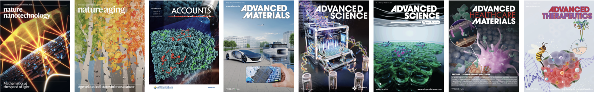

Publications
Full publications list

First-author publications
- Jin SM, Elisseeff JH. “Aging as a glitch in the matrix.” Nature Aging. 2025. News & Views.
- Jin SM, Seong Y, Cho JH, et al. “Nasal vaccination with muco-adhesive and -penetrating nanoparticle-based immune niche elicits protective mucosal immunity against heterologous influenza viruses.” Manuscript in preparation.
- Jin SM, Cho JH, Seong Y, et al. “Spatiotemporal dynamic immunomodulation by infection-mimicking gels enhances broad and durable protective immunity against heterologous viruses.” Advanced Science. 2025. Co-first author.
- Jin SM, Cho JH, Gwak Y, et al. “Transformable gel-to-nanovaccine enhances cancer immunotherapy via metronomic-like immunomodulation and collagen-mediated paracortex delivery.” Advanced Materials. 2024.
- Park SY, Jin SM, Kim SH, et al. “Bioconjugated antibody–Trojan immune converter enhances cancer immunotherapy with minimized toxicity by programmed two-step immunomodulation of myeloid cells.” Advanced Healthcare Materials. 2024. Co-first author.
- Jin SM, Yoo YJ, Lim YT. “Kinetics reshape antitumor immunity: Timing, duration, and combination are of importance for successful cancer immunotherapy.” Clinical and Translational Medicine. 2023. Co-first author.
- Jin SM, Yoo YJ, Shin HS, et al. “A nanoadjuvant that dynamically coordinates innate immune stimuli activation enhances cancer immunotherapy and reduces immune cell exhaustion.” Nature Nanotechnology. 2023. Co-first author.
- Jin SM, Lee SN, Kim JE, et al. “Overcoming chemoimmunotherapy-induced immunosuppression by assemblable and depot-forming immune modulating nanosuspension.” Advanced Science. 2021. Co-first author.
- Jin SM, Lee SN, Yoo YJ, Lim YT. “Molecular and macroscopic therapeutic systems for cytokine-based cancer immunotherapy.” Advanced Therapeutics. 2021. Co-first author.
- Lee SN, Jin SM, Shin HS, Lim YT. “Chemical strategies to enhance the therapeutic efficacy of toll-like receptor agonist-based cancer immunotherapy.” Accounts of Chemical Research. 2020. Co-first author.
Co-author publications
- Kim HM, Jeong K, Jeong J, Jin SM, et al. “Controlled-release nanoparticle of toll-like receptors-7/8 agonist enhances immune activation and inhibits gastric cancer in a preclinical mouse model.” Cancer Cell International. 2026.
- Shin HS, Kim S, Jin SM, et al. “Molecular masking of synthetic immunomodulator evokes antitumor immunity with reduced immune tolerance and systemic toxicity by temporal activity recovery and sustained stimulation.” Advanced Materials. 2023.
- Kwon KW, Kang TG, Lee A, Jin SM, et al. “Protective efficacy and immunogenicity of Rv0351/Rv3628 subunit vaccine formulated in different adjuvants against Mycobacterium tuberculosis infection.” Immune Network. 2023.
- Song C, Phuengkham H, Kim YS, et al. “Syringeable immunotherapeutic nanogel reshapes tumor microenvironment and prevents tumor metastasis and recurrence.” Nature Communications. 2019.
- Kim SY, Kim S, Kim JE, et al. “Lyophilizable and multifaceted Toll-like receptor 7/8 agonist-loaded nanoemulsion for the reprogramming of tumor microenvironments and enhanced cancer immunotherapy.” ACS Nano. 2019.